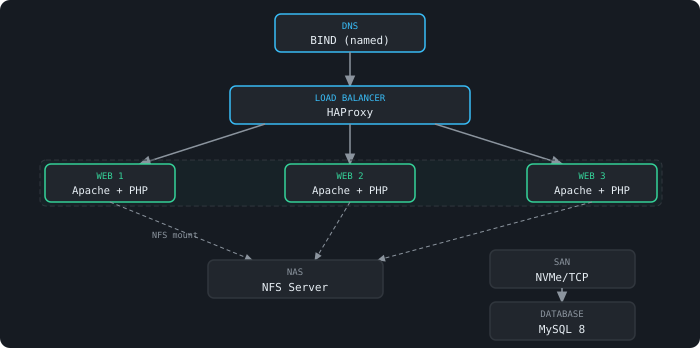
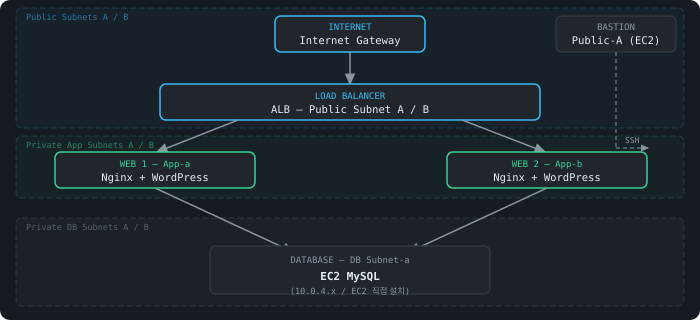

$ whoami
Sung-Jae Han · 회계한 엔지니어
Cloud & Infrastructure Engineer
온프레미스부터 AWS 멀티리전까지, 인프라 전 계층을 직접 설계하고 구축합니다.
Terraform · Ansible · Kubernetes로 재현 가능한 인프라를 만듭니다.
// about
전 직장에서 회계 담당자로 일하던 중, 세금 신고 마감일에 홈택스 서비스가 수 시간 장애를 겪는 상황을 직접 경험했습니다. 서버가 복구되기만을 기다리는 그 무력함이 클라우드 인프라 공부를 시작한 계기가 됐습니다.
현재는 온프레미스 ↔ AWS 하이브리드 인프라 설계와 구축에 집중하고 있습니다. Terraform으로 인프라를 코드로 관리하고, Kubernetes 위에서 서비스를 안정적으로 운영하는 것이 목표입니다.
단순히 도구를 사용하는 것을 넘어, 왜 이 설계를 선택했는지를 설명할 수 있는 엔지니어가 되고자 합니다.
// skills
// certifications
Red Hat Certified System Administrator
Red Hat Enterprise Linux 시스템 관리 및 운영
Red Hat한국정보통신자격협회 (ICQA)
네트워크 구성 · 관리 · 운영
ICQA한국생산성본부 (2021.12)
국가공인 / ERP 시스템 회계 모듈 운용
Domain Knowledge삼일회계법인 (2021.05)
국가공인 / 재무·세무·원가 관리 전문
Domain Knowledge// projects
국세청 홈택스를 모사한 B2G 서비스를 대상으로, 온프레미스(도쿄) ↔ AWS 서울 간 하이브리드 DR 인프라를 설계·구축한 팀 프로젝트. 전 직장에서 세금 신고 마감일에 홈택스 장애를 직접 경험한 것이 출발점이 됐습니다.
DNS·LB·WEB 3중화(Pacemaker Active-Active)·NAS·NVMe/TCP SAN·DB로 구성된 8노드 온프레미스 웹 인프라를 단독 설계·구축.

Terraform으로 AWS VPC·ALB·EC2·RDS 전체를 IaC로 프로비저닝하고, Ansible로 WordPress 서버 구성을 자동화한 실습 프로젝트.

// contact
클라우드 인프라 포지션을 적극적으로 찾고 있습니다.
채용 문의 또는 협업 제안은 언제든지 환영합니다.